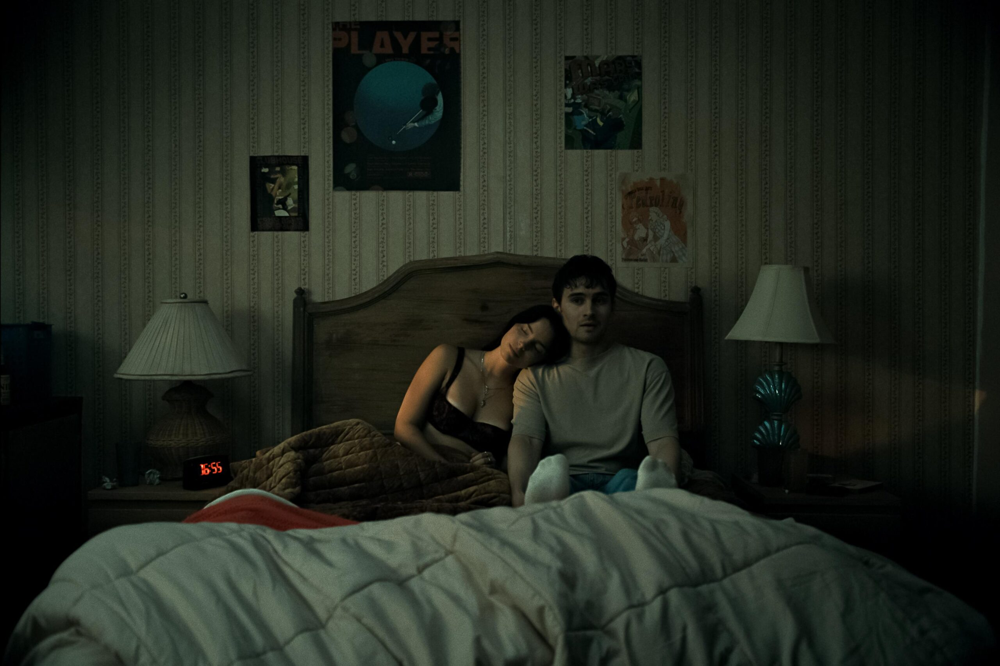
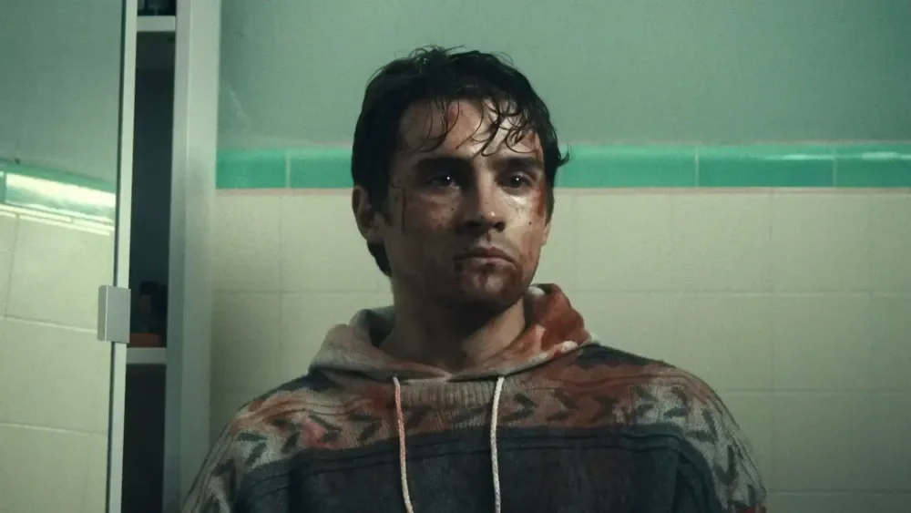
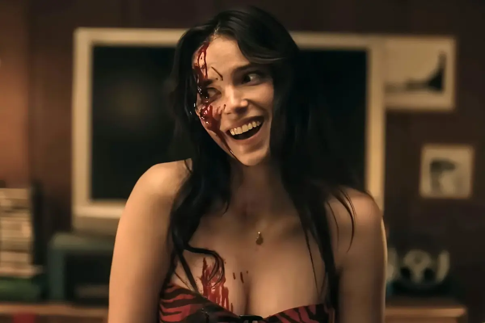

Só pode ser uma piada a ironia do quanto eu estou obcecado por Obsessão. Um filme que surgiu do
absoluto nada para mim e me fez correr ao cinema apenas depois de assistir uma prévia em uma divulgação no Discord. E ainda bem que fui.
Cada minuto do filme é tomado por uma sensação constante de desconforto, construída por uma obra que sabe exatamente qual
experiência quer entregar ao público, e executa isso com uma precisão absurda.

A premissa de Obsessão é extremamente simples, mas é justamente aí que o filme brilha. Não existem forças cósmicas, entidades sobrenaturais gigantescas ou explicações mirabolantes. Aqui, um simples desejo distorcido por amor já é suficiente para transformar tudo em um pesadelo.
Antes de assistir, imaginei que encontraria algo parecido com aqueles antigos jogos “Yandere” que explodiram no YouTube anos atrás: a clássica figura da namorada obsessiva capaz de tudo para manter alguém ao seu lado. E, de certa forma, é exatamente isso que o filme entrega Com uma pequena motivação sobrenatural, mas ações completamente humanas, ainda que algumas delas sejam tão cruéis e desconfortáveis que parecem ultrapassar qualquer limite de humanidade.


Nikki, a obcecada da vez, ganha vida graças à performance fenomenal de Inde Navarrette, que consegue alternar entre carisma, tensão e puro terror psicológico em questão de segundos. Em muitos momentos você vai rir, mas aquele tipo de riso nervoso, quase involuntário, causado pelo absurdo desconforto da situação.
“Obsessão transforma carinho em ameaça e desconforto em espetáculo, provando que o terror humano ainda é o mais assustador de todos.”
O mais interessante é acompanhar a escalada dos acontecimentos. Tudo começa de maneira relativamente simples, quase inocente, mas vai crescendo
em um ritmo tão grotesco quanto natural. Cada atrocidade parece um próximo passo inevitável dentro daquela espiral de obsessão, e isso faz você
querer descobrir até onde o filme terá coragem de ir.
E acredite: na reta final, ele vai.
Obsessão prova que, às vezes, o terror mais eficiente não está no sobrenatural, mas no que existe de mais cru, possível e humano. Porque o simples,
quando bem executado, pode ser muito mais assustador.
✔ O QUE É BOM
- A atuação de Inde Navarrette é intensa e extremamente desconfortável do melhor jeito possível.
- O filme sabe construir tensão usando situações simples e plausíveis.
- A escalada da obsessão acontece de forma natural e cada vez mais perturbadora.
✖ O QUE NÃO É BOM
- Alguns personagens do núcleo poderiam ser mais desenvolvidos.
Discussão e Opiniões